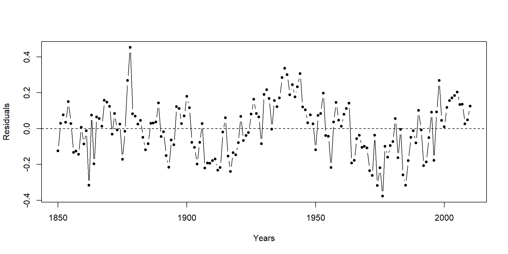
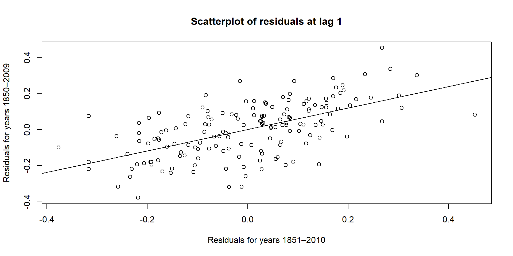
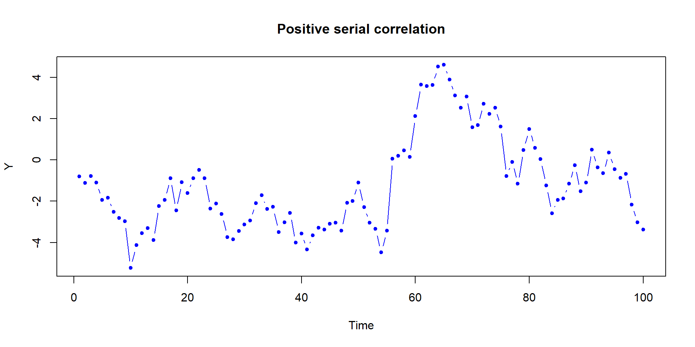
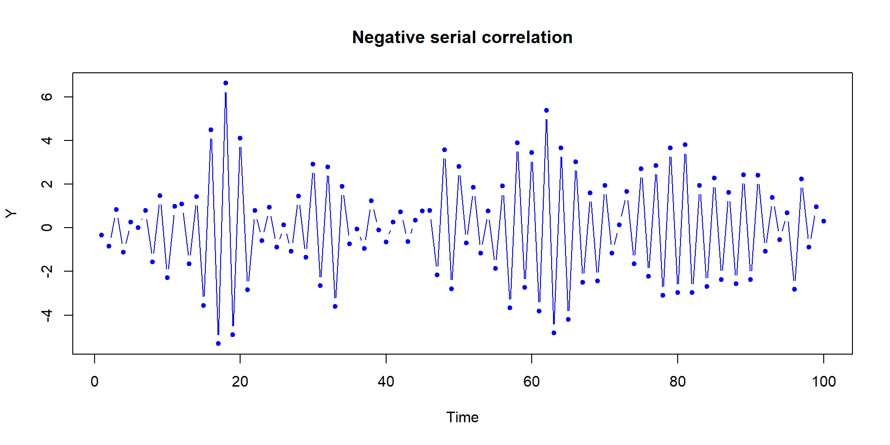
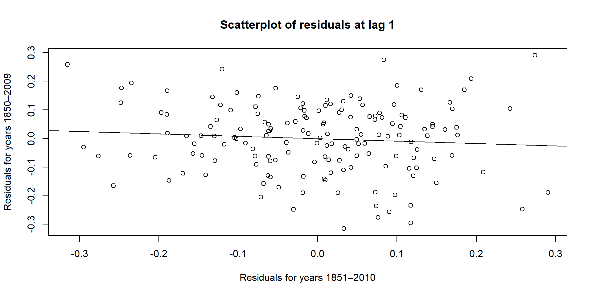

plot(case1502$Year, case1502$Temperature,main ="Annual temperature anomalies from 1850 to 2010",xlab ="Year",ylab ="Temperature in C",col ="blue",pch =20,type ="b")abline(h =0, lty ="dashed")
# One might argue a curved trend in the scatter plotmod.raw <-lm(Temperature ~ Year +I(Year^2), data = case1502)summary(mod.raw)
Call:
lm(formula = Temperature ~ Year + I(Year^2), data = case1502)
Residuals:
Min 1Q Median 3Q Max
-0.37663 -0.10532 0.01289 0.10494 0.45210
Coefficients:
Estimate Std. Error t value Pr(>|t|)
(Intercept) 1.953e+02 2.283e+01 8.556 9.63e-15 ***
Year -2.072e-01 2.367e-02 -8.755 2.95e-15 ***
I(Year^2) 5.486e-05 6.131e-06 8.948 9.29e-16 ***
---
Signif. codes: 0 '***' 0.001 '**' 0.01 '*' 0.05 '.' 0.1 ' ' 1
Residual standard error: 0.1503 on 158 degrees of freedom
Multiple R-squared: 0.7163, Adjusted R-squared: 0.7127
F-statistic: 199.5 on 2 and 158 DF, p-value: < 2.2e-16
Checkin’ Out Data
# Checking out the resulting residualsplot(case1502$Year, mod.raw$res,col ="black",pch =20,type ="b",ylab ="Residuals",xlab ="Years")abline(h =0, lty ="dashed")
Checkin’ Out Data

Serial Correlation
From the residual plot, one might argue that we see the points move above or below the center line in chunks. In other words:
When the residuals are positive, they tend to remain positive for a while.
When the residuals are negative, they tend to remain negative for a while.
This behavior breaks the random pattern that we expect from residuals and suggests the presence of serial correlation in the data.
Serial Correlation
Serial correlation occurs when observations in a time series are influenced by their recent past.
For example:
First-order serial correlation occurs when the observation at time \(t\) depends on the observation at time \(t-1\). If this occurs, it violates the assumption of independence.
Checking Serial Correlation
How can we check whether this is happening? One approach is to examine the correlation between consecutive residuals.
We can do this by constructing a scatterplot of lagged residuals:
Residuals for years 1851–2010
vs residuals for years 1850–2009
Checking Serial Correlation
plot(mod.raw$res[1:160], mod.raw$res[2:161],main ="Scatterplot of residuals at lag 1",xlab ="Residuals for years 1851–2010",ylab ="Residuals for years 1850–2009")abline(lm(mod.raw$res[2:161] ~ mod.raw$res[1:160])) # Add regression line
Checking Serial Correlation

cor(mod.raw$res[1:160], mod.raw$res[2:161]) # This correlation is known as r1
[1] 0.5943034
Why Is Serial Correlation a Problem?
Failing to properly characterize the correlation structure can affect our estimate of variability in the process.
Consequences include:
Incorrect standard errors
Unreliable P-values
Potentially misleading statistical inference
Positive Serial Correlation
When observations are positively correlated, consecutive observations tend to attract each other.
As a result, we may observe less variability in the response, simply due to the correlation structure.
When serial correlation is positive the usual standard error is too small, thus it needs to be inflated
Positive Serial Correlation
# Generate 100 observations with first-order serial correlation 0.9ts.sim1 <-arima.sim(list(order =c(1,0,0), ar =0.9), n =100)plot(c(1:100), ts.sim1,col ="blue", pch =20, type ="b",main ="Positive serial correlation",xlab ="Time", ylab ="Y")
Positive Serial Correlation

Negative Serial Correlation
When observations are negatively correlated, consecutive observations tend to repel each other.
This leads to greater variability in the response, again due to the correlation structure.
When serial correlation is negative the usual standard error is too large, thus it needs to be reduced
Negative Serial Correlation
# Generate 100 observations with first-order serial correlation -0.9ts.sim2 <-arima.sim(list(order =c(1,0,0), ar =-0.9), n =100)plot(c(1:100), ts.sim2,col ="blue", pch =20, type ="b",main ="Negative serial correlation",xlab ="Time", ylab ="Y")
Negative Serial Correlation

The Autoregressive Model
Because our observations are measured at equally spaced points in time (one observation per year in this example), we denote the series as:
\[
\{Y_t\}
\]
Using this notation:
\(Y_1\) corresponds to the observation at time \(t=1\) (year 1850).
\(Y_2\) corresponds to the observation at time \(t=2\) (year 1851).
And so on.
First-Order Autoregressive Model (AR(1))
Suppose that:
We have a time series \(\{Y_t\}\) observed at equally spaced times.
The long-run mean of the series is \(\nu\).
Then the first-order autoregressive model, AR(1), is defined as
The first serial correlation coefficient, \(\alpha\), is also called the lag-1 autocorrelation.
\(\alpha\) is also known as the population first serial correlation coefficient thus it may be estimated by the sample first serial correlation coefficient denoted \(\hat{\alpha} = r_{1}\).
It measures the correlation between \(Y_t\) and itself at a separation of one time step.
We don’t need to do any of these calculations by hand though since we have already done cor(mod.raw$res[1:160], mod.raw$res[2:161]) = 0.5943034 giving us \(r_{1}\)
Why Is This Model Useful?
If the AR(1) model adequately describes the correlation structure, we can filter the series to obtain a new regression model where the errors are independent.
This allows us to:
Preserve the same regression coefficients
Remove serial correlation from the residuals, “fixing” our standard errors
We now fit a regression model using the filtered variables.
mod.filt <-lm(v ~ u1 + u2)summary(mod.filt)
Call:
lm(formula = v ~ u1 + u2)
Residuals:
Min 1Q Median 3Q Max
-0.31490 -0.07474 0.01004 0.08654 0.29011
Coefficients:
Estimate Std. Error t value Pr(>|t|)
(Intercept) 8.481e+01 1.870e+01 4.535 1.14e-05 ***
u1 -2.214e-01 4.773e-02 -4.638 7.38e-06 ***
u2 5.852e-05 1.235e-05 4.737 4.82e-06 ***
---
Signif. codes: 0 '***' 0.001 '**' 0.01 '*' 0.05 '.' 0.1 ' ' 1
Residual standard error: 0.1209 on 157 degrees of freedom
Multiple R-squared: 0.409, Adjusted R-squared: 0.4014
F-statistic: 54.32 on 2 and 157 DF, p-value: < 2.2e-16
Residuals After Filtering
We again examine the correlation between lagged residuals.
plot(mod.filt$res[1:159], mod.filt$res[2:160],main ="Scatterplot of residuals at lag 1",xlab ="Residuals for years 1851–2010",ylab ="Residuals for years 1850–2009")abline(lm(mod.filt$res[2:160] ~ mod.filt$res[1:159]))
Residuals After Filtering

Residuals After Filtering
cor(mod.filt$res[1:159], mod.filt$res[2:160]) # Essentially no correlation now!